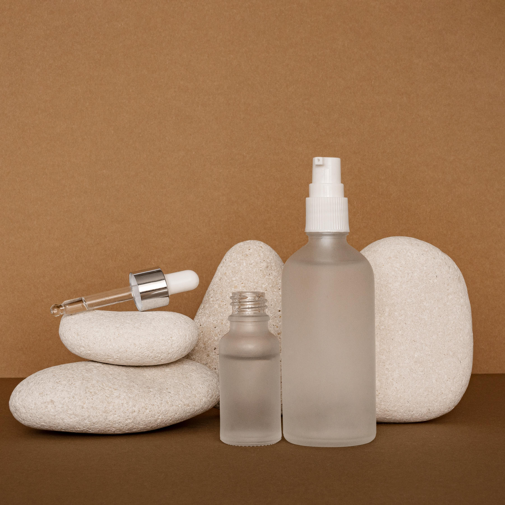
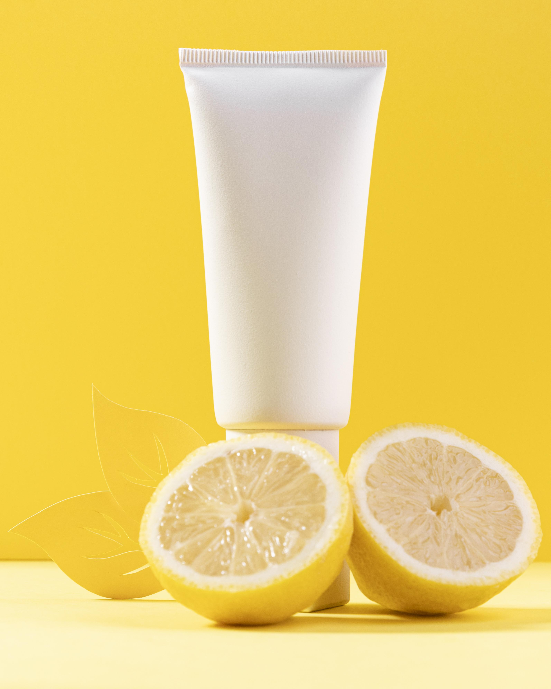
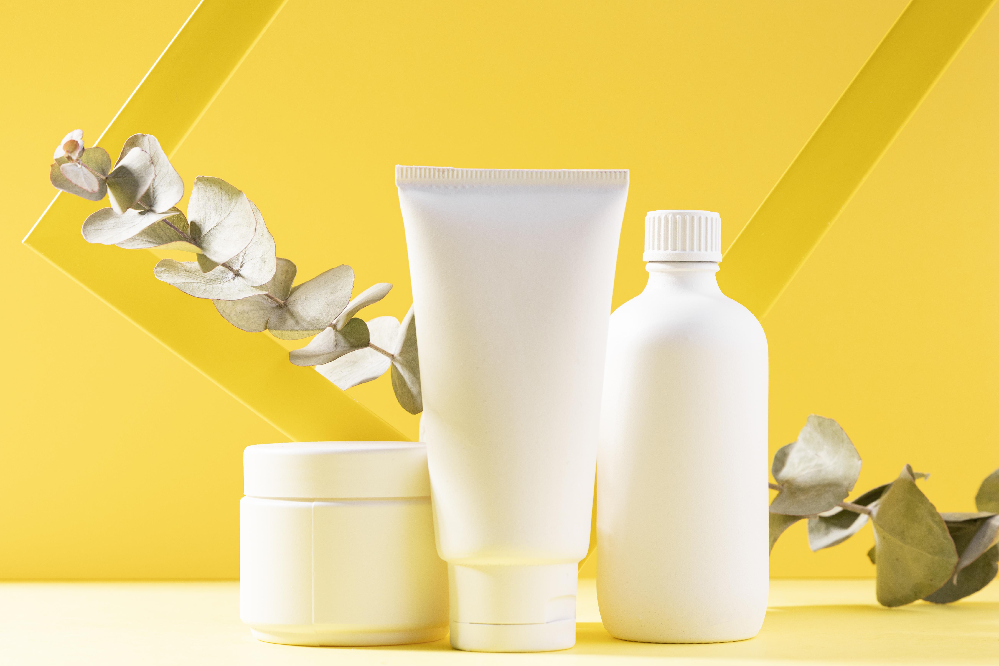

Produtos em Destaque
-
Serum 20 em 1
O sérum é um veículo de textura leve, de rápida absorção e de fácil espalhabilidade, que agrada diversas peles brasileiras por ser um líquido fluido, não gorduroso e de profunda absorção. Devido a essas características, poucas gotas são necessárias para uma ação eficaz na pele.
-
Protetor solar
O filtro solar ou protetor solar é um produto tópico que ajuda a proteger a pele da radiação ultravioleta do sol, o que reduz as queimaduras solares e outros danos à pele, intimamente ligado a um menor risco de câncer de pele..
-
Kit Skin
Um kit de skincare para pele seca que contém gel de limpeza, óleo hidratante, creme noturno, que promove uma limpeza profunda e uma hidratação intensa.
Dicas de skincare
-
Dica 1
Limpeza adequada: Limpeza é uma parte fundamental da rotina de skincare, pois ajuda a remover sujeira, poluição, células mortas e outras impurezas que podem obstruir os poros e causar acne e outras irritações. Use um limpador suave e adequado para o seu tipo de pele, e evite lavar o rosto com água quente, que pode ressecar e irritar a pele.
-
Dica 2
Hidratação diária: A hidratação é essencial para manter a pele saudável e radiante. Use um hidratante adequado para o seu tipo de pele para ajudar a prevenir a perda de umidade e manter a pele macia e flexível. Se a sua pele é muito seca, considere usar um óleo facial ou sérum hidratante em conjunto com o hidratante .
-
Dica 3
Proteção solar: A exposição ao sol pode causar danos à pele, como manchas, rugas e até mesmo câncer de pele. Use um protetor solar com pelo menos FPS 30 todos os dias, mesmo em dias nublados ou chuvosos, e reaplique a cada duas horas se estiver ao ar livre por um longo período de tempo. Além disso, use roupas de proteção e evite ficar ao sol durante as horas mais quentes do dia.